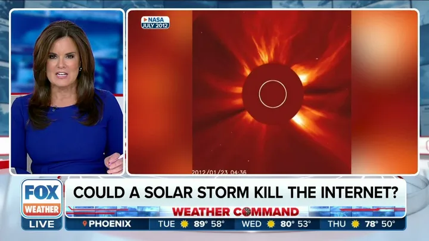
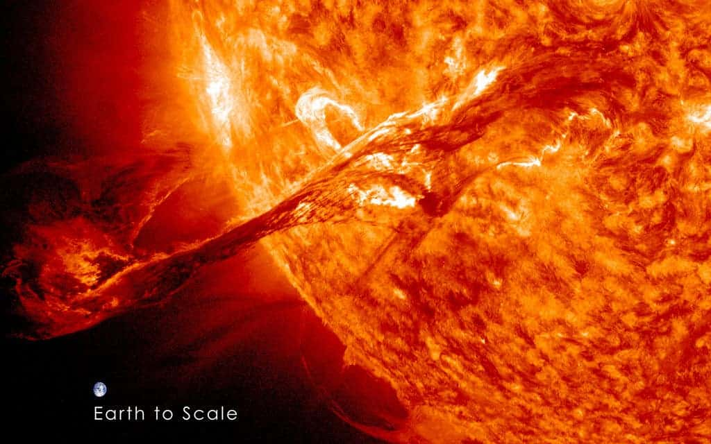
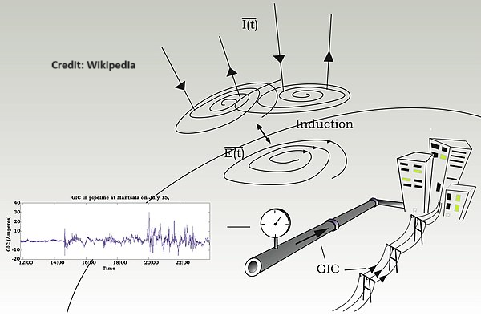

Shibaji Chakraborty
Shibaji Chakraborty
If I had written this article before 2020, the word ‘Apocalypse’ would have taken me to my childhood days. Just like any other Indian millennial kid, my toddler and teenage days were full of stories. My ‘audiobook’, my grandmother, used to read out stories from old Hindu scriptures. Many of them are depictions of apocalyptical days. I heard it in my native language, Bengali! However, the 2020–2021 ‘Black Swan’ days completely reshaped my associative memory about the word ‘Apocalypse’.

‘End of the Internet’ — is that correct? Credit: FOX Weather News.
Know the Source of the Term ‘Internet Apocalypse’
Being a Space Weather researcher I came across the scientific paper “Solar Superstorms: Planning for an Internet Apocalypse” written by Dr. Jyothi, a few years back while working with one of the renowned scientists in the field of space weather, Dr. Boteler. Dr. Jyothi is an Assistant Professor at the Department of Computer Science at UCLA, Irvine. The scientific paper describes the impact of ‘Solar Superstorms’ on the global internet infrastructure.
A Short Note on ‘Solar Superstorms’: There is a special category of solar storms, leading to large Coronal Mass Ejections (CMEs), which then induce larger than expected ‘magnetic storms’ at the near-Earth or ‘Geospace’ environment. Scientists at NOAA and NASA call them ‘Solar Superstorms’. These Solar Superstorms are typically rare events which can create very high monetary damage and impact on geospace and modern civilization by damaging spacecraft, impacting the health of astronauts, and even impacting long electrical wires on the surface of the Earth.

An artistic rendering of the solar surface during a ‘Solar Superstorm’. Image Credit: NASA.
Are we going to suffocate to death by not being able to visit Instagram or not being able to post to X (formerly Twitter)?
Well, it depends on your compulsion level about your media activity and phone addiction levels — hence the answer to this question is subjective.
Enough of these nerdy jokes, let’s come to the facts. The term ‘Internet Apocalypse’ was picked up by various media outlets and projected as an ‘End-of-Day’ scenario used as click-bait to gain profit. This is not a personal rant against any media house but rather a holistic try to lay out the information in front of the general audience — information I have the luxury of knowing as a professional in the field.

Illustration of how space weather induces electric currents in long conductors such as power lines, pipelines, and submarine networks, causing power system outages or pipeline corrosion. Credit: NRCan.
But the question remains:
- Is it going to happen? If ‘yes’, what do Jyothi et al. have to say about it?
- Are there any mitigation or disaster management plans?
Let’s start from the top. Jyothi et al. mentioned the ‘Solar Superstorm’ as a Black Swan event for internet infrastructure. The long-distance internet cables — on land and under the water — that connect multiple large data servers are severely disrupted by these Solar Superstorm-induced magnetic storms. These magnetic storms create large magnetic vortices near the Earth. The induced large magnetic vortices drive ground electric fields (referred to as geoelectric fields, GEF), which create ground induced currents (referred to as geomagnetically induced currents, GIC) flowing through long-distance conductors, such as internet cables. Now, the Jyothi et al. study mentions that GICs can lead to long-term irreparable damages to land-based or underwater long-distance internet cables — is that true? Short answer: NO. The explanation requires a separate paragraph.
How a Solar Storm Disrupts the Web
Michael Faraday proved that a moving bar-magnet induces an electric current in a nearby electrical wire. This principle is also used by turbine-dynamos in power plants to create electrical power — scientifically referred to as electromagnetic induction. Solar magnetic storms can change magnetic fields around the Earth over hundreds of thousands of kilometers, leading to strong induction in the long-distance conducting wires around us. One example of such a conducting wire is an internet cable.
Don’t lose your sleep over an ‘Internet Apocalypse’
While there are a large number of media reports on this topic, there is no need to lose your sleep over it. With modern technological advancement, more than 95% of internet traffic is routed via submarine internet cables (cables under the water), so we have a huge reliance on them. The new-age internet cables are fiber-optics by nature — which are immune to GICs. The underwater internet cables are also shielded by the water itself from the induction effects, commonly known as ‘electromagnetic shielding’. In a single word, this shielding mechanism reduces the strength of the induction process and associated impact on the underwater cables.
What Specialists Are Saying
Having said all this, there are recorded instances of submarine cable voltages being impacted by magnetic storms. On February 10, 1958, a solar storm created alternately loud squawks and faint whispers on the transatlantic communication link between Clarenville, Newfoundland, and Oban, Scotland. The naturally induced voltage created constructive and destructive interference with the cable supply voltage.
New-age cables are more robust and made of optical fibers. However, there is still a conductor through the cable to carry power to the repeaters. During the March 1989 storm, a new transatlantic cable (TAT-8, deployed at that time) did not experience any disruption. However, large induced voltages were observed on the power supply cables, as recorded by the operators. Current cables use a much more robust system, fewer repeaters, and require a much higher driving voltage as dynamic range to offset any unwanted voltage and current fluctuations. I’m currently working on a project testing the vulnerabilities of the current cables and assessing the risk of magnetic storms on them.
What Do You Actually Have to Worry About?
Despite what some headlines have been saying, there’s no internet apocalypse on the horizon. However, that does not mean that the 95% of internet traffic-carrying submarine cables are not prone to any natural disaster. Studies have shown that tsunamis and underwater landslides pose a much bigger threat to submarine cables. Even ship anchors are a much bigger concern for a few cables than Solar Superstorms — not a joke! While these natural calamities may pose a threat to global connectivity, rest assured it is not going to wipe out the global connection in a single shot.
However, if any natural calamity is causing a scenario like ‘Internet Apocalypse’, I would rather worry more about my life over my Twitter feed — again, not a joke. I’m clear about my priorities.